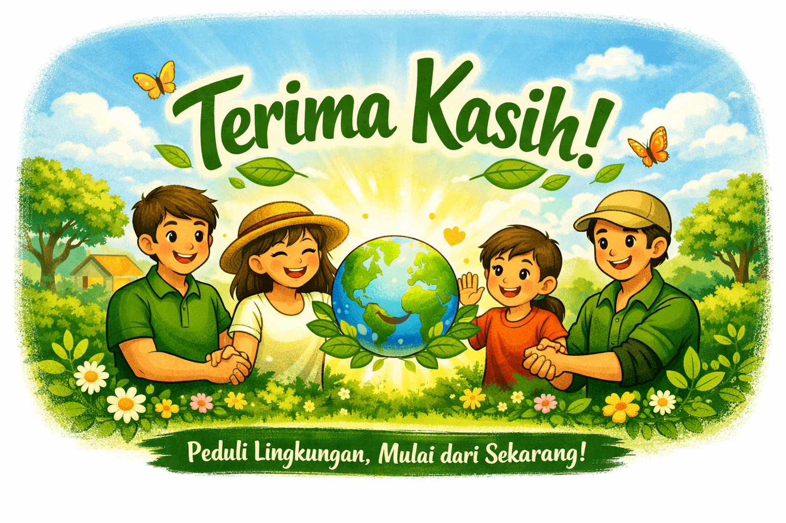

Terima kasih telah bergabung dengan Ecopoetica!
Dukunganmu sangat berarti bagi gerakan sadar lingkungan.
Kembali ke BerandaLangkah kecil, dampak besar

Dukunganmu sangat berarti bagi gerakan sadar lingkungan.
Kembali ke Beranda